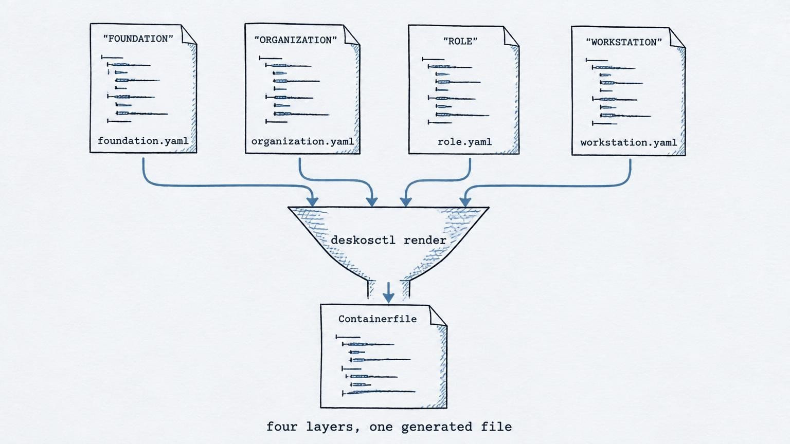
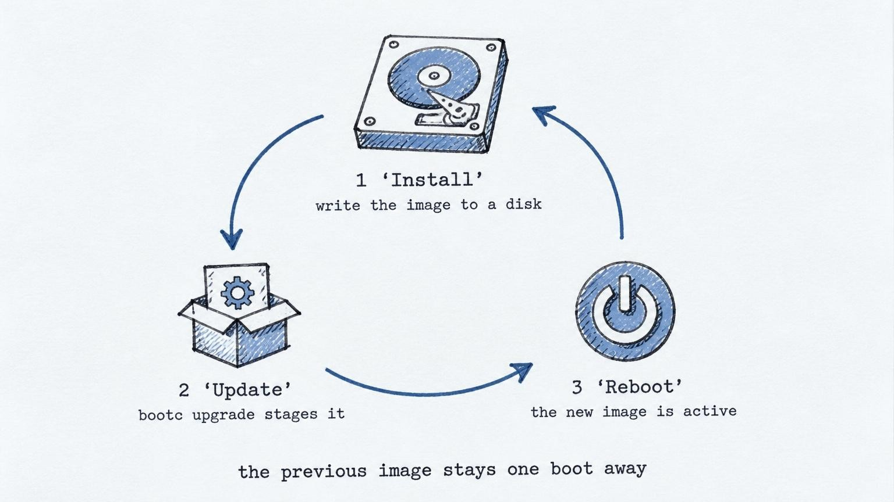

bootc · OCI · deterministic
The desktop
is compiled.
Declared intent across foundation, organization, role and workstation layers compiles into a verified Containerfile and a bootable vendor image. No drift, no agents, no shell scripts.
Same inputs, same artifact.
01 Compile
YAML in.
One image out.
You describe the machine; DeskOS checks it, merges the layers and writes a generated Containerfile. That file is the whole output: read it, diff it, build it with podman. Every step in it was generated from a resource, not authored as a script, and there is no runtime, no agent and no controller.
deterministic · offline · no scripts · nothing runs on the machine

apiVersion: core.deskos.org/v1alpha1
kind: Workstation
metadata:
name: deskos-core-centos-stream-10
spec:
platformRef: centos-stream-10
profiles:
- deskos-core
- deskos-gnome
- deskos-adwaita
- rhel-family
- deskos-look
- deskos-reference-apps
- firefox
- deskos-dock
---
# file: desktop/deskos-core.yaml — policy, not dconf keys.
# the packages come from profiles/deskos-gnome.yaml.
apiVersion: desktop.deskos.org/v1alpha1
kind: GnomeProfile
metadata:
name: deskos-core
spec:
defaults:
windows:
buttons: [minimize, maximize, close]
software:
updates: manual
session:
idle:
blankAfter: 10m# Generated by deskosctl from plan.json. Do not edit.
#
# Workstation: deskos-core-centos-stream-10
# Platform: centos-stream-10 (CentOS Stream 10)
FROM quay.io/centos-bootc/centos-bootc:stream10@sha256:f09b8e56…
# Package groups
RUN --mount=type=tmpfs,target=/var/lib/rhsm \
… subscription guard …
&& dnf -y group install 'workstation-product-environment' \
&& dnf clean all
# Packages
RUN … dnf -y install 'flatpak' 'git' 'tmux' 'zsh' … \
&& dnf clean all
# System configuration
RUN … glib-compile-schemas … && dconf update \
&& systemctl enable 'gdm.service' … \
&& systemctl mask 'bootc-fetch-apply-updates.timer' …
# Cleanup and bootc validation
RUN … && bootc container lint
LABEL org.deskos.platform="centos-stream-10" \
org.deskos.workstation="deskos-core-centos-stream-10"Left is the reference workstation and one of the
profiles it pulls in, abridged; right is an excerpt of the file they render,
with … for omitted lines. The left names resources; the right
lists every package and every dconf key they resolve to, one step each, in a
fixed order.
Why not something else
Handwritten Containerfile
Imperative RUN lines hide state in shell. They drift
between teams, and two teams' scripts cannot be merged by rule. DeskOS
compiles the steps from typed resources, so a layer either composes or
fails validation.
MDM or configuration management
Ansible, Puppet and their peers mutate a running machine, so a partial run leaves a partial state. DeskOS composes the whole machine offline; the machine receives an image and nothing executes on it.
A custom distribution
Every platform starts from its vendor's unmodified bootc base:
centos-bootc, rhel-bootc,
almalinux-bootc, fedora-silverblue. Vendor
kernel, vendor lifecycle, vendor trust chain.
02 Platforms
Same intent, the vendor's base.
Each platform starts from its own vendor's bootc image — never a derived one — and says what has actually been verified on it. What is not measured is written as not measured.
| Platform | Base | Composes | Image | Booted | Published |
|---|---|---|---|---|---|
| CentOS Stream 10 | centos-bootc | validated | CI | GNOME + session | quay.io/deskos |
| Fedora 45 | fedora-silverblue | validated | CI | GNOME + session | quay.io/deskos |
| AlmaLinux 10 | almalinux-bootc | validated | CI | GNOME + session | quay.io/deskos |
| RHEL 10 | rhel-bootc | validated | your build | your hardware | never |
RHEL-derived images are never published. CentOS Stream 10 and Fedora 45 publish a signed installer ISO; AlmaLinux 10 publishes an image only. The reports behind each published digest, and what was not measured, are in Evidence.
03 Install
Install once.
Update as an image.
1. Compile your own organizational image.
Write the layers, run deskosctl render, build the generated
Containerfile with podman, and move the machine onto the
image with bootc. The base stays the vendor's; the packages
and the desktop policy are the ones you declared.
deskosctl render → podman build → bootc switch
2. Boot the reference community build.
Pull a published image from quay.io/deskos —
deskos-core-centos-stream-10,
deskos-core-fedora-45 or
deskos-core-almalinux-10 — and write a disk with
bootc-image-builder. Or boot one of the two installer ISOs
built from them, both mirrored with a checksum at
download.deskos.org:
CentOS Stream 10, installed and booted in a VM before
release, and Fedora 45, where a test-only ISO from the
same image installed unattended and reached the installed system; the
published Fedora ISO asks for the disk and LUKS, so the person
installing finishes it. AlmaLinux 10 publishes no installer.
Build steps Download the CS10 ISO Download the Fedora 45 ISO
Before you boot it, check the checksum and the signature: verify a download.

04 Questions
Before you ask.
Is this a distribution?
No. DeskOS compiles workstations onto the base each vendor already ships. It does not own a kernel, a package archive or a support contract for one.
Does anything of DeskOS run on the machine?
No. DeskOS writes a Containerfile; podman builds it; bootc boots the image. The optional
deskos companion only reports what the image contains.
What does “deterministic” mean?
Same resources, same plan and same Containerfile. The image build is not bit-for-bit reproducible yet, because external repositories move — and the docs say so.
Where are the ISOs?
Both are on download.deskos.org:
CentOS Stream 10 first, then Fedora 45, each with its checksum and the dated
build behind the stable name. AlmaLinux 10 publishes an image only,
and RHEL ISOs are never published.